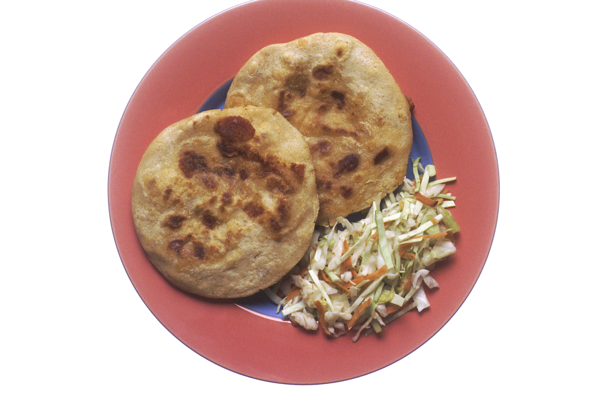

Pupusas

Authentic Salvadoran Pupusas
A pupusa is a thick griddle cake or flatbread from El Salvador and Honduras made with cornmeal or rice flour, similar to the Colombian and Venezuelan arepa. In El Salvador, it has been declared the national dish and has a specific day to celebrate it. It is usually stuffed with one or more ingredients, which may include cheese (such as quesillo or cheese with loroco buds), chicharrón, squash, or refried beans. It is typically accompanied by curtido (a spicy fermented cabbage slaw) and tomato salsa, and is traditionally eaten by hand.
INGREDIENTS
THE BEANS
- 3 cups red beans (cooked)
- 1/4 small onion
- 1/2 cup corn oil
- 1 tablespoon salt
- 1 cup water (I use cooking liquid from the beans)
THE CHEESE
- 3 lbs mozzarella cheese (shredded)
- 1/2 green bell pepper (diced)
- 1/2 cup chile (I use lorocco which is a tropical flower found in latin markets)
THE MASA
- 4 cups masa corn flour (I use maseca brand)
- 2 cups warm water
STEPS
THE BEANS:
- Head the corn in a large soup pan on medium high heat. Once the oil is heated fry the onion until golden brown.
- While the onions are cooking, place half of the beans and 1/2 cup of the served bean liquid in a blender and blend for 1 minute.
- Once the onion is golden in color, about 4 minutes take the onion out with a slotted spoon.
- Carefully stir the beans from the blender into the hot oil. Turn your heat down to medium low.
- Next add the onion and the rest of the beans and reserved 1/2 cup cooking liquid into the blender and liquefy for a minute. Add the beans to the rest of the mixture that is already cooking.
- Carefully stir the beans until no oil appears in the beans, about 3 minutes. Cook on medium stirring about every 5 minutes until the beans have darkened about 3 shades and are the consistency of refried beans in a can.
THE CHEESE
- Place the shredded mozzarella, lorocco, and bell pepper in a food processor and process until the bell peppers and lorocco are chopped into tiny pieces and fully incorporated into the cheese.
- Next, place the cheese mixture into a plastic bowl and warm the mix in the microwave for no more than 20 seconds.
- Next--and yes this sounds gross, squeeze the cheese mixture with your hands until it becomes like a soft putty consistency.
- Set the cheese aside and get ready for the masa.
THE MASA
- Place the masa mix and water in a bowl and stir until fully mixed. The masa should be very sticky but should form an easy ball when rolled. If not, add water until it is sticky but easy to work with.
- Next, place an egg size ball of masa in your hand (it helps to place a tiny bit of oil on your hands before doing this) and press the masa out in one hand to represent a small plate the size of your palm.
- Place about a tablespoon of cheese down onto the masa, then a tsp of beans. Pull the sides of masa up around the beans and cheese and roll it into a ball. Next flaten it a tiny bit with your palms to form a thick disc. Pat the disc turning it between your hands about 6 times to flatten it more but to keep it in a round shape.
- The pupusa should be a little less than 1/2 inch thick.
- Place the pupusa on a large oiled non stick surface and cook on medium high until each side is golden brown, around 3 minutes on each side.